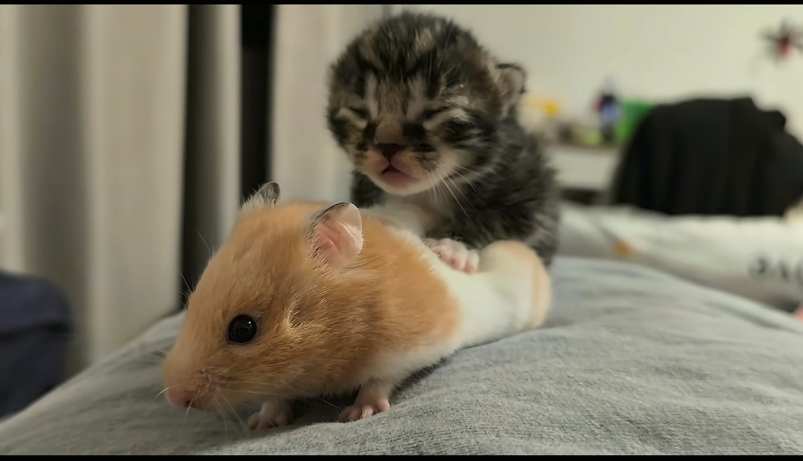

我艾特的 打死我？
闭眼：好听 睁眼：闭眼
两个小美人儿扭到叔叔心里去了
在抖音真的能见世面，居然看到猫喂老鼠喝奶
看看你后面呢？奶是让你白吃的吗？[憨笑] 
其实早已有过猫给老鼠喂奶的先例[赞]
想起来有一个博主喂了一个流浪猫，结果流浪猫把她的鼠鼠全解决了[泣不成声]
猫：自己养的吃着放心
老鼠长大后[九转大肠]
这个世界太疯狂了 猫给耗子当奶娘了
猫：不应该啊 我崽怎么长的鼠里鼠气的 闻上去还有点美味
耗子喝猫奶，自己的命座自己改
以后辞退 老板：你走吧 我：等我看一下抖音
现实：你仲裁去吧[看]
好一个律政俏佳人[舔屏]
这期更是sexy的没边了
“你被辞退了” “你等一下，我上抖音搜下盛律师怎么说”
公司回应[捂脸]
评论区和当时的兔子警官一样，明明是在好好的普法视频[衰]
生气都这么可爱
小时候老人经常说被咬打雷了才会松口[捂脸][捂脸][捂脸]
通天河听完自己冻上了
我甚至不知道这是什么歌，一出来我就感觉天冷了通天河冻上了[呆无辜]
终于有人懂水管了[泪奔]我有一个水管萧，我这干燥的很，还不会裂，水随便洗，而且吹到一半发现我老公做鬼脸还能当棍子打人[比心]
好冷啊
《弥补了竹笛会裂的缺点》[捂脸]哈哈哈哈哈要给我脸都笑烂了被转转回收了
ppr水管制造商:这泼天的富贵[暗中观察] 乐器制造商:天塌了
已下单
像学给排水最后的出路
果然要气温高的时候听，真的好凉快
你们俩哈哈哈哈哈哈哈哈哈哈哈哈哈哈哈哈哈
我小时候有这个笛子两块钱一根好像[看]
懂了 打败你的不是同行 也有可能是跨界[听歌][听歌]
水管笛吹久了会不会中毒啊[泪奔]不知道为什么我吹一会感觉不舒服，有点恶心。但是竹笛并没有
大师兄，这天怎么这么冷啊…
[憨笑]太好了到通天河了，我们没救了
高手啊，微信余额给我吹没了[微笑]好凄凉
咱们若是冻死在这，可有人知道
评论区全是只有中国人能听懂的梗，暗号算是对上了，哈哈哈哈哈哈
歌名是啥我不知道，但是我知道河应该是冻上了[九转大肠]
突然屋子里就变冷了[流泪]
这个不就是贴纸吗[发呆]
你儿媳妇睡觉打呼噜[看]
那是只未成年狗而且还是只公的[泪奔]
这个公狗，哪来的妈妈[思考]
45岁了，终于有宝宝了，太不容易了[流泪][流泪]请允许我也晒晒，就算没有赞心里也是甜[感谢][感谢][感谢]
妹妹结婚的时候，50岁哥哥哭的一把鼻涕一把泪滴😅[偷笑][偷笑]，后面还有一个哭稀流的大侄儿😂😂[偷笑][偷笑][偷笑][偷笑]
小帽墨镜一带，搂着侄子肩膀，仅有的五块钱给侄子买了一个棉花糖，牛美丽真有姑姑样儿[呲牙]
这小姑子是全网最幸福的了，不但没有姑嫂矛盾，嫂子还那么疼她。
别人：姐姐这一世，一定带你回家 我：弟弟，世子之争向来如此
看了这个发型就知道为什么家长想给孩子睡扁头了[捂脸][捂脸]
这一战，既然避无可避，那不如放手一搏。
我见犹怜，破碎山河[加一][比心]
如果卡了一下子，后面全部错版
八戒很专一，每次队伍要解散的时候，他都说回高老庄[流泪][流泪][流泪]
首先，高翠兰并不喜欢他 其次，猪八戒见一个爱一个 最后，他是因为性骚扰被赶出天庭的 这也能洗，真是绝了
想多了，八戒就是见一个爱一个对谁都这样
就是因为向天借了500块，所以封了。
食物中毒？ 不是给我说的是放纵餐吃撑了嘛[尬笑]
这借口我很满意 晚上拉肚子接着输 你就是unity的救星 加油卡拉米
已经黑转粉，现在看他翻腕都觉得有观赏性[捂脸]
上一次知道赛前食物中毒的是乔丹，现在是卡子哥[舔屏][舔屏][舔屏][比心][比心][比心]
还是一样猛bro 想起试训天天干的时候了
长大后的样子
《成长之路》
AAA建材王总小时候
先天揽胜圣体
第一次get到三岁看到老
这孩儿怎么一看就是开路虎揽胜的呢
长大可以别拖欠我儿子工资吗
今天不走商务路线了走运动风
历任青龙都会被授予大内最厉害武器，称“大明十四势”宝盒内藏十四柄精钢宝刀，其中八柄名为“天、地、将、法、智、信、仁、勇”作为审问之用，另外六柄专用于处决，一杀违旨抗命，二杀干政弄权，三杀贪赃枉法，四杀通敌叛国，五杀同袍相残，最后一柄称为“奉天成仁”，在执行任务失败时，用于自裁。
我是十几年的老漆匠了，你邮过来，我帮你上漆。包你满意。
[九转大肠][九转大肠]用木头会卡，你换铁的或者钢的[看][看]
要是高中你坐我旁边 我连大专都考不上[捂脸]
我爷爷在旁边听完了，就说这个自来也是个人物
讲师感觉对演讲稿还不太熟
我说老辈子怎么都喜欢听说书呢[捂脸]这下懂了[捂脸][捂脸][捂脸]
填补了80 90后没有自己的百家讲坛栏目的空白。
男的为什么会觉得 分开她会幸福 而不去想 我要给她幸福？相爱为什么分开 不就是不够爱 足够爱她就给她幸福啊
你俩又不过了吗[流泪]
看的真压抑，全是现实，还不如苦尽柑来遇见你，至少有温馨
你们分手，那我呢
我的天啊，这个破碎感[流泪]
这张图不火的话在座的各位都有责任[酷拽]
小羊真是狗小胆大[九转大肠][九转大肠]
小小的羊已经懂得看家护院了[你不大行][你不大行][你不大行]
看到现在，觉得哑铃根本配不上静姝
重点我已经立好遗嘱了！！！还有什么怕的！
把我看哭了[流泪]，太不容易了，希望得到社会的关注，多帮帮他[流泪]
王超爸爸，你太可怜了，儿子含冤离世，你又不小心生病了，王超爸爸，祝你早日康复
这种背叛乱搞的人就应该得到应有的惩罚，支持你告告告[发怒][发怒][发怒]
Read more: